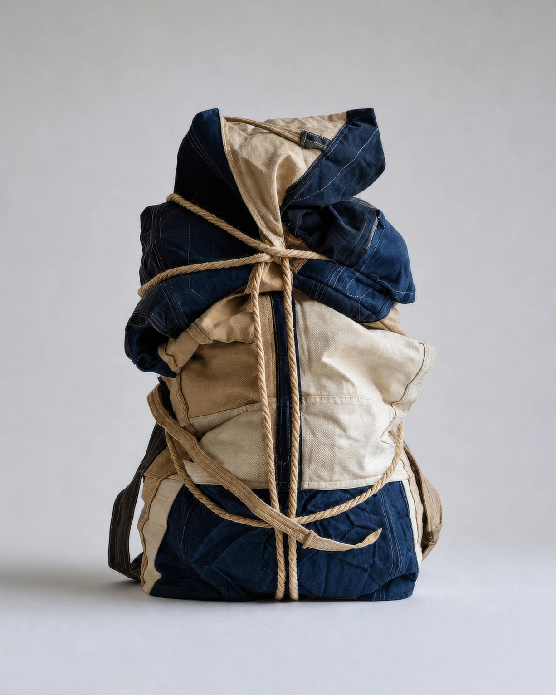

No.17 Adaptive Device
Rest Cocoon Unit, 2042
사용자의 신체를 압축된 자세로 감싸 어디서든 짧은 휴식과 수면을 가능하게 하는 휴대형 장치이다. 최소한의 면적만으로 휴식을 취할 수 있도록 설계되었다. 사용자는 방 안의 빈 틈, 복도, 계단참, 창가, 벽면 등 잠시 확보된 공간을 즉석의 수면 공간으로 전환할 수 있다.
- 크기/무게
- W: 55, H: 82(cm) / 6.5(kg)
- 재질
- 면 캔버스, 데님, 면직물, 황마 로프, 가죽 스트랩
- 사용 목적
-
고정된 침대 없이 수면 가능
짧은 휴식과 수면의 반복
최소 면적에서 신체 안정 유지 - 유도 자세
-
척추 굴곡 유지
무릎과 가슴을 밀착한 자세
양팔을 몸통 가까이 고정
목을 앞으로 숙인 상태 유지 - 추정 환경
-
협소주택
작업실 한쪽 빈 공간 - 추정 사용
- 사용자는 몸을 웅크린 상태로 내부에 삽입한 뒤 외부의 끈을 조여 신체를 고정했던 것으로 추정된다. 손잡이의 마모 흔적으로 보아 휴식 후 장치를 접어 지속적으로 휴대하며 사용한 것으로 확인된다.
* 이미지에 마우스를 올려보세요.